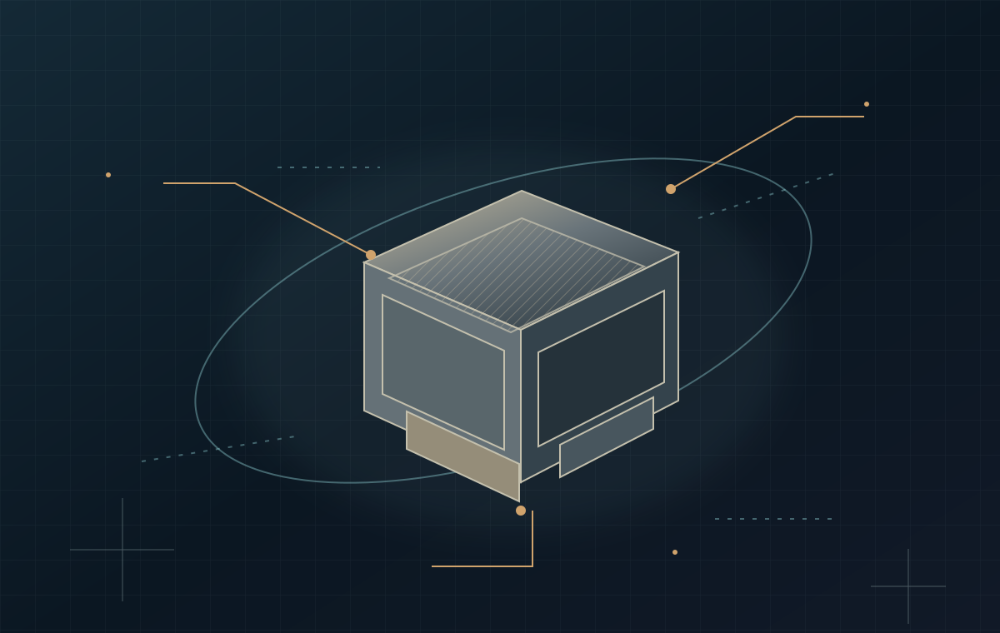

FORGOTTEN
FOOTPRINTS
/
ARCHIVE
☰
文
العربية
Contact
Credits
FIELD NOTE / 00
BEYOND EARTH
↗
↓
ENTRY 001 / THE SILENCE
ENTRY 001
ENTRY 002
ENTRY 003
↗
↶
↷
−
+
02 / 01
↗
LUNAR FIELD / CONCEPT ART
03 / 02
↗
MARTIAN FIELD / CONCEPT ART
04 / 03
↗
OUTER REACH / CONCEPT ART
05
↗

↗
↗
01
02
03
04